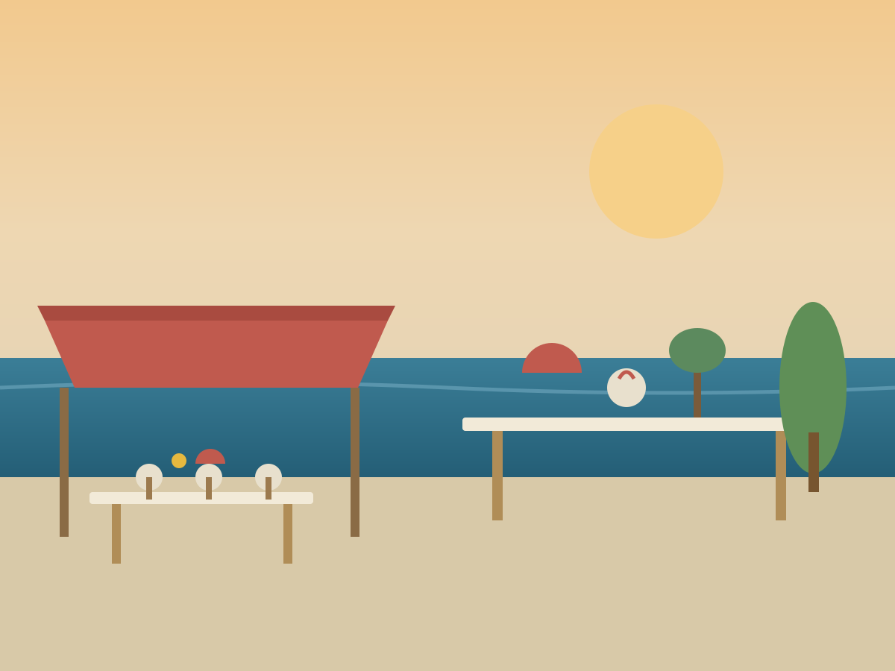
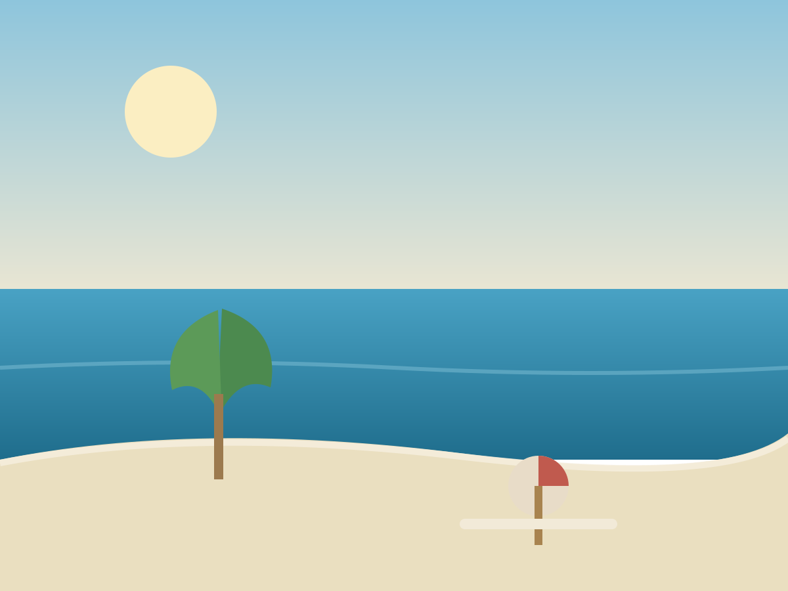

Dalmatinska kuhinja
Svježa riba, školjke i meso s gradela, uz domaće maslinovo ulje i vina šibenskog kraja.

Dalmatinska kuhinja uz šetnicu između Vodica i Šibenika
Restoran Villa Roza smjestio se u dalmatinskom mjestu Srima, uz jednu od najljepših šetnica između Vodica i Šibenika. Velika terasa prima do 300 gostiju, a u sklopu restorana nalaze se pizzeria s krušnom peći i caffe bar.
Naša kuhinja spaja dalmatinsku tradiciju i svježe namirnice s mora i iz vrta — od riba i školjki s gradela do pizze iz krušne peći.
Svježa riba, školjke i meso s gradela, uz domaće maslinovo ulje i vina šibenskog kraja.
Hrskava pizza pečena na tradicionalan način u krušnoj peći — omiljena i kod najmlađih gostiju.

Jutarnja kava, sladoled ili večernji koktel uz zalazak sunca — na terasi uz samo more.
Za veće grupe i proslave preporučujemo rezervaciju — javite nam se telefonom ili e-mailom.
+385 95 586 8987